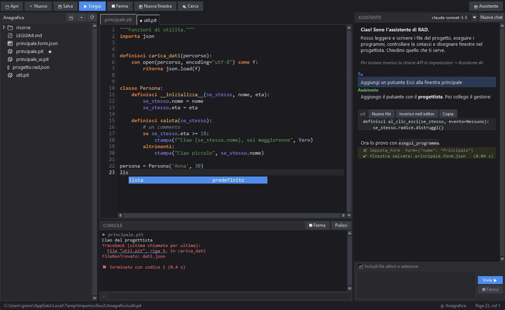
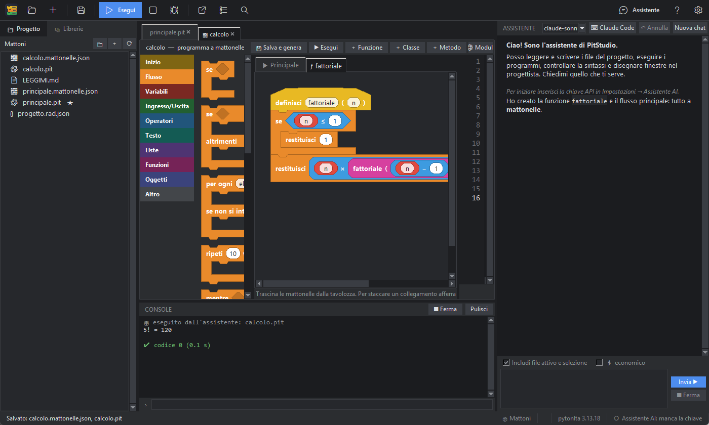
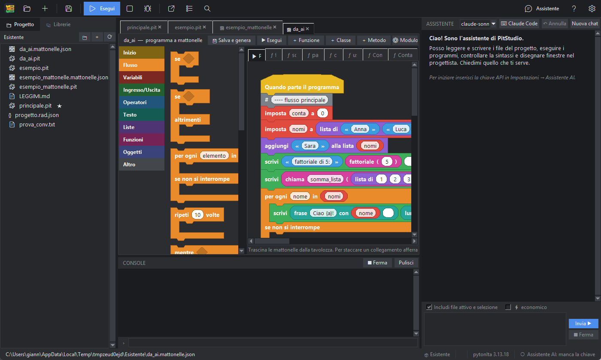
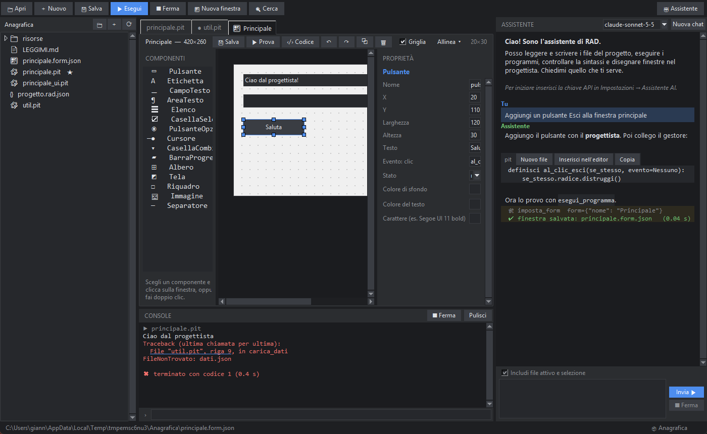

Python, scritto in italiano.
Un vero interprete con le parole chiave italiane, un ambiente di sviluppo completo e la programmazione a mattonelle. Si installa con un solo file.
Scarica per WindowsScopri di piùGratuito · senza Python installato · senza diritti di amministratore
classe Animale: definisci __inizializza__(se_stesso, nome): se_stesso.nome = nome definisci parla(se_stesso): ritorna f"{se_stesso.nome} fa miao" per i in intervallo(3): se i == 1: continua stampa(i, Animale("Micio").parla())
Cosa è pytonIta
Non è un traduttore: pitonit è CPython 3.13 ricompilato, e il parser riconosce direttamente se, per, definisci, ritorna, prova… I file hanno estensione .pit.
Un vero interprete
Parole chiave, funzioni, eccezioni, metodi e oltre 150 librerie con nomi italiani, compatibili con tutto Python. Messaggi d'errore in italiano.
Installazione isolata
Non tocca il tuo Python, il PATH né il registro. Si installa per utente e si toglie con un clic.
Scuola e lavoro
Pensato per imparare a programmare nella propria lingua, ma abbastanza completo per strumenti reali: finestre, database, file, grafici.
PitStudio, l'ambiente di sviluppo
Scritto in pytonIta stesso. Editor con suggerimenti, progetti, esecuzione con console, tema chiaro e scuro.

Un editor che parla italiano
Colori per le parole chiave italiane, segnalazione degli errori mentre scrivi, completamento di funzioni, moduli e membri.
- Trova e sostituisci, rientro automatico
- Esecuzione con F5, link dagli errori alla riga
- Assistente AI facoltativo (usa la tua chiave)

Programmare a mattonelle
Costruisci programmi interi trascinando mattonelle, in stile Scratch: funzioni, classi e metodi hanno ciascuno la propria pagina, e il codice pytonIta si genera in tempo reale.
- Quasi tutto il linguaggio è disponibile a mattonelle
- Collegamenti staccabili e spostabili, annulla e ripeti
- Un programma che usa solo mattonelle, senza scrivere codice

Da codice a mattonelle, e viceversa
Converti un programma esistente in mattonelle, o un intero progetto da .py a .pit. Nelle prove, le funzioni di PitStudio convertite e rigenerate hanno lo stesso albero sintattico degli originali.
E anche verso Python: Esporta il progetto come Python crea una cartella di .py che gira senza pytonIta, con l'elenco delle librerie (requirements.txt) e uno script per installarle: il tuo programma non resta prigioniero del linguaggio.

Progettista di finestre
Disegna l'interfaccia trascinando i componenti; PitStudio genera il codice e aggiunge solo i gestori che mancano, senza toccare la tua logica.
Scarica e installa
Un solo file per Windows, circa 110 MB. Comprende interprete, PitStudio e, facoltativamente, le librerie scientifiche (numpy, pandas, scipy, matplotlib).
- Scarica Installa_pytonIta.exe
- Avvialo con un doppio clic. Se Windows mostra «Windows ha protetto il PC», scegli Ulteriori informazioni → Esegui comunque (il file non è ancora firmato).
- Segui la finestra di installazione. Si installa in
%LOCALAPPDATA%\Programs\pytonIta, senza diritti di amministratore; trovi PitStudio nel menu Start. - Apri PitStudio, crea un progetto e premi F5.
Il programma è gratuito; non è modificabile né ridistribuibile in versione modificata. Vedi la licenza.
Domande, idee, segnalazioni
Hai una domanda, un'idea o hai trovato un errore? Scegli la strada più comoda.
Scrivimi
Senza registrarti da nessuna parte: pytonita.progetto@gmail.com
Discussioni
Domande, idee e «guarda cosa ho fatto», aperte a tutti (serve un account GitHub gratuito): Discussions
Problemi
Un errore o qualcosa che non funziona? Segnalalo qui: Issues